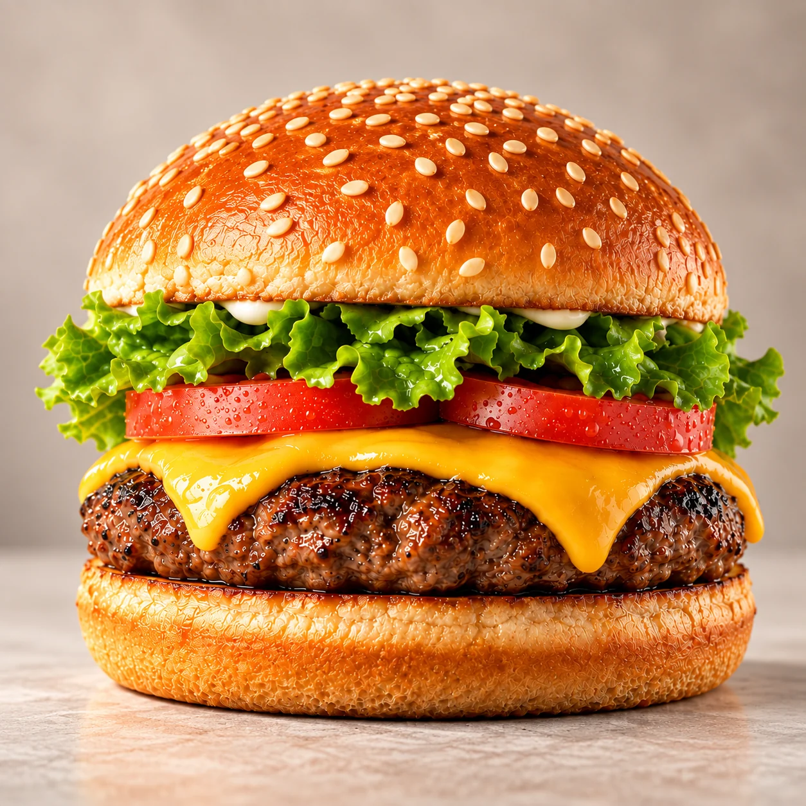
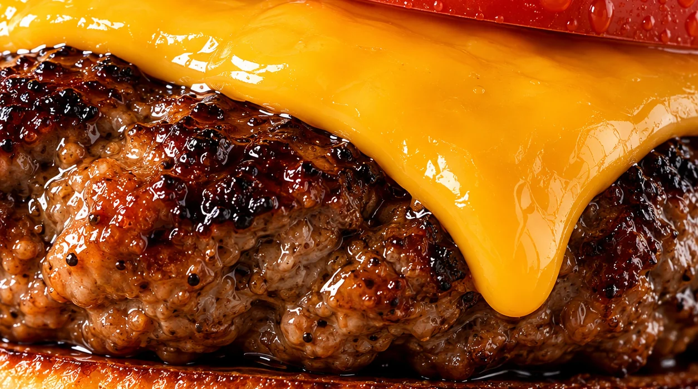
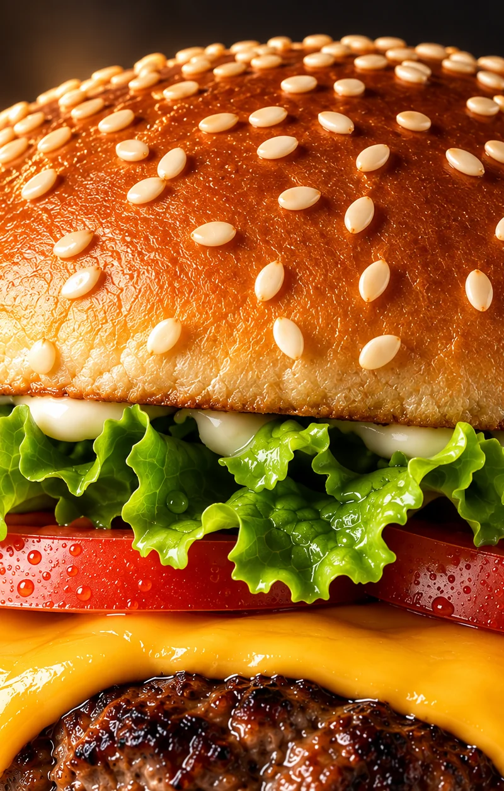
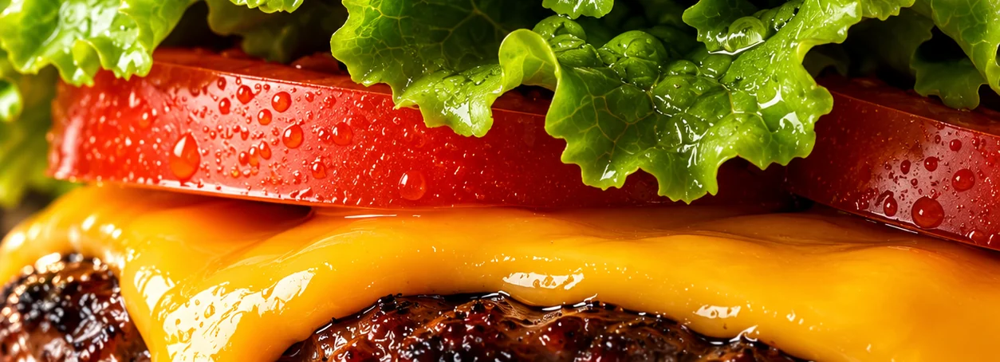

N.º 01 · a um metro
O Clássico.
O hambúrguer que dá nome à casa. Sete camadas montadas pela mesma ordem, sempre. Esta página desmonta-o, uma distância de cada vez.
- 150 gNovilho
- 7Camadas
- 4 minChapa ao balcão
- 9,50 €Preço

A 30 cm · as camadas
De cima
a baixo.
Cada camada protege a seguinte. Escolha uma para a separar das outras e aproximar a câmara. As setas do teclado também percorrem a pilha.
Pão de brioche · ao perto
01 / 07
Montado≈ 395 g · 4 min · 9,50 €

A 5 cm
Ao perto.
O mesmo Clássico, a um palmo de distância.


150 g 230 °C 4 min

Cortado ao meio
Por dentro.
Corte um Clássico e as camadas continuam no lugar. É para isso que servem a ordem e o pão tostado.
- 01Brioche12 H DE MASSA
- 02Carne ao ponto150 G · 20 % GORDURA
- 03CheddarÚLTIMA VOLTA
Nas mãos
Montado
à mão.
Cada Clássico passa pelas mesmas mãos, na mesma ordem, do pão da base à tampa. Cerca de quatro minutos entre a chapa e o balcão.

Agora, inteiro outra vez.
Leve o Clássico para casa, montado pela mesma ordem que acabou de ver.
9,50 €